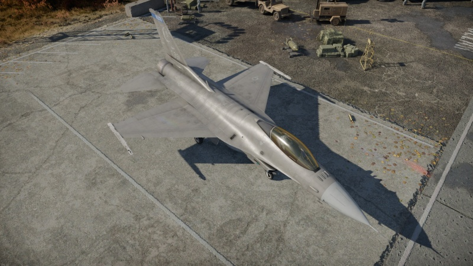
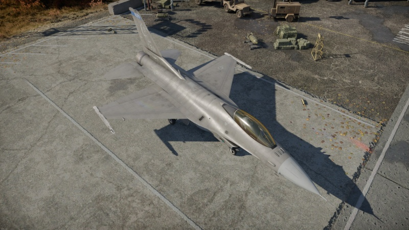

Urządzenie służące do drukowania na papierze tekstu lub grafiki zapisanej na dysku; najbardziej rozpowszechnione są drukarki igłowe, atramentowe i laserowe; drukarki igłowe są niezwykle korzystne, jeśli chodzi o cenę, lecz nie pozwalają uzyskać wydruku tak wysokiej jakości, jaką gwarantują drukarki atramentowe i laserowe; drukarki atramentowe z kolei są dość atrakcyjne cenowo, a poza tym oferują możliwość drukowania również w kolorze; jednak najlepsza jakość uzyskiwana jest przy użyciu drukarek laserowych.
Urządzenie służące do kreślenia rysunków lub grafiki w formacie do A1 włącznie; ploter jest wyposażony w pisak (w przypadku ploterów kolorowych jest ich kilka), który porusza się po osiach x i y zgodnie z tym, jakie informacje otrzymuje od komputera; silnymi konkurentami dla ploterów są nowoczesne kolorowe drukarki atramentowe i laserowe.
Urządzenie elektroniczne wyposażone w ekran, na którym - w zależności od rodzaju doprowadzonego sygnału elektrycznego - uzyskuje się ruchome obrazy, rysunki, wykresy, zestawienia, wyniki obliczeń i pomiarów, dane w postaci znaków i liter; ekran monitora stanowi najczęściej płaska część lampy kineskopowej (kineskop) lub płyta wyświetlacza ciekłokrystalicznego;
 
